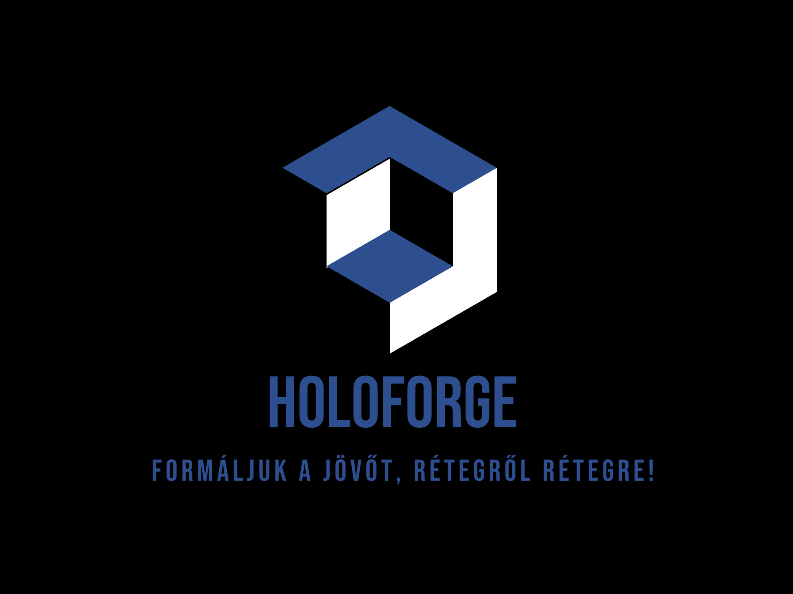

Bár a 3D nyomtatási technológia már több mint 30 éve velünk van, csak napjainkban kezd lassan, de biztosan az érdeklődés központjába kerülni a hétköznapi emberek körében is. Ennek oroszlánrésze a nyomtatók folyamatosan csökkenő árának és rendkívül széleskörű alkalmazhatóságának köszönhető, melynek köszönhetően szinte bármit létrehozhat, amit csak el tud képzelni, sőt számos trükkös otthoni és munkahelyi probléma viszonylag olcsón megoldható segítségükkel, hiszen a beszerzési árat leszámítva a 3D nyomtató üzemeltetése igen olcsó mulatság. Ha ez a technológia elnyerte tetszését, a következő sorokban röviden elmagyarázzuk, hogyan is működik valójában egy 3D nyomtató, és miben különböznek egymástól a különböző modellek.
Bár a 3D nyomtatás több mint 30 évvel ezelőtti megszületése óta rengeteg különböző technológiai eljárás jelent meg a világban, mivel minden feltaláló kezdetben titokban tartotta a sajátját annak egyedisége miatt, idővel a 3D nyomtatási technológiák - legalábbis a közhasználat szempontjából - mindössze két olyan típusra kristályosodtak ki, amelyek megfizethetőek és hazai, legfeljebb mérsékelten fejlett körülmények között is használhatóak. Valójában a 3D nyomtatók gyártói az utóbbi években leginkább a hétköznapi felhasználókat célozták meg, mivel ez a legérdekesebb és szuverén módon a legszélesebb szegmens, amelyet el tudnak érni. Vessünk tehát egy pillantást néhány kulcsfontosságú 3D nyomtatási technológiára.
A 3D nyomtatáshoz szükséges digitális modelleket 3D modellező programokban, például az AutoCAD, a Blender és hasonló programokban készítik. Azonban ugyanezzel a lélegzetvétellel hozzá kell tenni, hogy ezeknek a programoknak a megtanulása nem egyszerű dolog - különösen, ha autodidakta módon tanul, és például "csak" az interneten található videókat és így tovább használja a készségei fejlesztéséhez.
